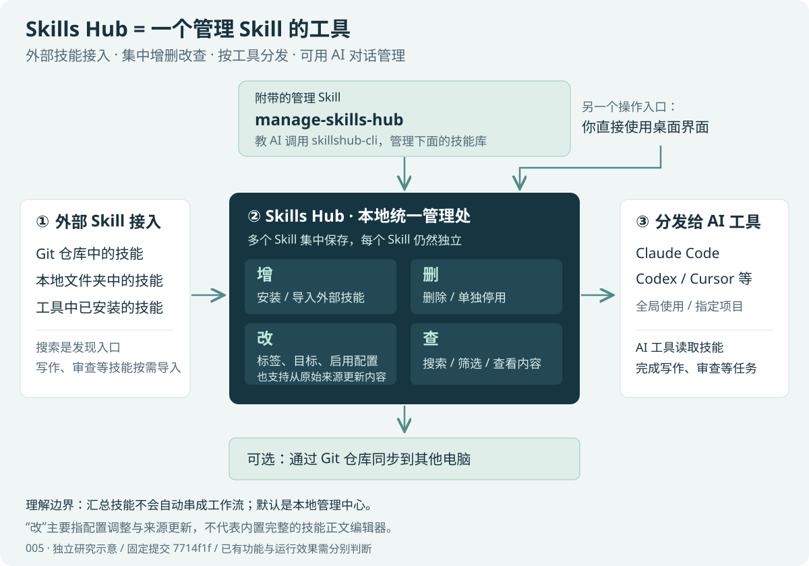

它本身是什么？
一个管理 Skill 的桌面工具。它把来自不同地方的技能收进同一个管理界面，再分发给选定的工具或项目。
把多个外部 Skill 汇总到一个本地管理中心。你可以直接用桌面界面，也可以让 AI 通过附带的管理 Skill 帮你操作。

一个管理 Skill 的桌面工具。它把来自不同地方的技能收进同一个管理界面，再分发给选定的工具或项目。
有配套的 manage-skills-hub。这个管理 Skill 教 AI 操作 Skills Hub；写作、PPT、代码审查等业务技能通常从外部按需接入。
默认是你电脑上的管理中心，可选跨设备同步。多个技能仍各自独立，不会因为放在一起就自动组成工作流。
依据：上游功能与 AI 管理说明 · CLI 管理命令
示例中的业务 Skill 需自行接入。
从 Git 仓库、本地目录添加，或导入已有技能。
删除技能；不想删除时，也可以只停用。两者含义不同。
修改标签、目标工具、范围和启用状态；从原始来源更新。
搜索、筛选，查看技能说明、来源、文件与状态。
“改”的边界：这里主要指管理配置和来源更新，不能理解为已提供完整的 Skill 正文编辑器。要改变技能做事的方法，应在它的源文件中维护内容，再通过更新流程同步。
依据固定版本文档整理，未实际安装。
从已研究的库中挑选一个具体技能目录，使用 Git 地址或本地文件夹添加；也可以在 Explore 中查找。一个仓库包含多个技能时，先确认要安装哪一个。
设置标签，选择目标 AI 工具，以及全局或指定项目范围。首次尝试建议只选择一个工具、一个试验项目。
确认它能发现技能，再做一次小任务。例如导入审查技能后，让 AI 审查一段测试代码；查看是否按技能要求输出。文件同步成功与任务效果是两项不同检查。
在 My Skills 中查看内容、改标签、启停或删除。有效的技能再扩展到其他工具和项目；需要双机使用时，再配置 Device Sync。
在 Skills Hub 的 Settings → AI Management 中启用，安装配套 CLI 和官方管理 Skill，并按提示刷新终端环境。在 My Skills 中找到 manage-skills-hub，确认它已分发给你使用的 AI 工具。
示例请求：“列出我已安装的技能及其来源，帮我找出需要整理的项。”
这是用法示例，尚未执行。AI 是否能调用命令仍取决于当前工具环境和权限。单独安装 CLI 不会自动安装这个管理 Skill。
你正在积累开源项目研究和展示网页。研究集帮助你判断“有什么、值不值得用”；Skills Hub 可以承接挑选后的安装、分发和维护。这是基于你当前工作的采用建议。
记录能力、场景、来源和边界，挑出有用的具体 Skill。
集中安装、分类、指定工具与项目、跟踪来源更新。
让技能参与网页、文档或代码任务，把效果再写回研究记录。
同一个技能不必在多个工具中分别找来源、复制文件、追踪更新。
研究过、装过、启用了、验证有效，是四种不同状态。管理工具帮助你掌握中间两种，效果仍需自己验证。
只保留经过实际任务验证的技能，为网页研究、文档整理等工作建立稳定的可用集合。
建议你先做的小试验：从现有研究中选 1 个技能，导入后只分发给 1 个 AI 工具的 1 个试验项目，完成 1 次实际任务，再决定是否扩大使用。如果仍处于浏览研究阶段，暂时无需安装全部技能。
以下场景为基于已知能力的应用分析。
同一套代码审查方法，在不同工具中反复安装。
安装一次 → 选择目标工具 → 统一更新
价值：减少重复维护，让方法文件保持一致。
各工具对技能的理解与执行效果仍需分别验证。
通用规范和项目专用要求混在一起，不易维护。
通用技能设为全局 → 专用技能分配给指定项目
价值：每个项目获得适合自己的技能集合。
需确认目标工具支持项目目录；不提供运行时权限隔离。
新电脑缺少常用技能，旧电脑内容已发生变化。
连接同步仓库 → 同步内容 → 在新电脑配置工具目标
价值：复用技能内容，减少重新整理的工作。
路径、工具目标和凭据需要按设备配置。
来源不清楚、用途重叠、停用和清理成本高。
扫描导入 → 阅读内容 → 添加标签 → 批量启停
价值：形成容易查找、取舍和维护的清单。
是否高质量、是否重复，仍需要内容判断。
新人需要反复获取评审、测试和文档规范。
维护共享 Git 来源 → 成员安装 → 分发给各自工具
价值：用同一来源传播可复用的工作方法。
这是建议的用法；企业审批、成员权限和审计需另行建设。
安装、整理和检查技能时，经常切换窗口。
启用 AI 管理 → 加载管理 Skill → 由 AI 调用 CLI
价值：用对话完成受支持的技能管理操作。
对话由宿主 AI 提供；Skills Hub 本身不承担通用 AI 推理。
核心机制：文件 + SQLite + 目录适配 + 同步策略。
一个 Skill 通常包含 SKILL.md，以及脚本、模板或参考资料。Hub 管理这些内容，下游 AI 工具负责读取并执行任务。
选择技能目录
读取名称与描述
默认 ~/.skillshub
SQLite 记录来源与目标
适配工具目录
选择全局或项目范围
发现并读取技能
按宿主能力执行任务
桌面：React + TypeScript + Tauri ｜ 核心：Rust ｜ 管理数据：SQLite ｜ 设备间：Git 仓库
文件系统保存技能正文和资源；SQLite 记录来源、版本、路径、目标、标签和状态。中心目录是一份内容库，不必等同于一个 Git 工作区。
依据：SkillStore 数据模型自动模式先尝试符号链接，Windows 可尝试 junction，失败再回退到复制。固定版本对 Cursor 采用复制策略。链接共享文件，副本需要重新同步。
依据：同步引擎 · 兼容说明来源更新把上游新内容带入中心库；设备同步交换各电脑上的可移植内容。同步清单保留描述、标签与文件哈希，剥离本地来源路径；合并比较基线、本地和远端。
依据：同步清单 · 合并计划宿主 AI 阅读管理 Skill，再调用 skillshub-cli。命令行支持 JSON 输出；它提供管理入口，通用对话与推理由宿主 AI 承担。
依据：CLI 命令定义区分管理能力、执行能力与企业治理。
| 你需要的结果 | 当前能提供 | 仍需额外完成 |
|---|---|---|
| 多个工具共享技能 | 目录分发、来源记录与更新 | 逐个工具验证触发与执行效果 |
| 项目专用工作方法 | 项目目标和启用状态配置 | 检查技能依赖、权限与规范冲突 |
| 多电脑内容一致 | Git 同步、历史和冲突处理 | 配置每台设备的路径、目标与凭据 |
| 团队统一技能版本 | 共享来源和已有管理机制 | 补充版本策略、发布审批和审计 |
采用判断：工具、技能、项目或设备越多，集中管理越有价值。只有一个工具和少量稳定技能时，手动管理也可能足够。同步成功不能替代任务效果验证。
分析建议 · 非已实现功能或官方路线图
已记录来源版本，具备更新和设备同步历史。
扩展入口：installer.rs · skill_store.rs增加项目锁定文件、固定提交安装策略、升级差异和受控回滚。
价值：让团队明确每个项目使用哪一套技能版本。已有目录适配、状态检查和 CLI doctor 入口。
扩展入口：tool_adapters · CLI · 独立评估模块声明系统、软件和工具依赖；用固定任务评估触发、输出与失败率。
价值：把文件安装成功与任务执行成功分别衡量。支持 Git 来源和跨设备内容同步。
扩展入口：内容发布服务 · 身份权限层增加团队技能目录、发布审批、角色权限、签名与操作审计。
价值：从个人管理扩展到团队可控的内容分发。已有标签、批量操作和项目目标。
扩展入口：skill_store.rs · 安装流程将一组技能及版本组成前端包、入职包或发布检查包。
价值：减少逐个挑选和配置，支持项目模板化初始化。已有 CLI、JSON 输出和对话式管理。
扩展入口：cli/args.rs · cli/handlers.rs在既有命令能力上完善 CI 接入、稳定协议或 MCP 服务。
价值：让项目初始化与技能维护进入已有自动化流程。管理信息可描述安装和同步状态。
扩展入口：宿主工具集成 · 评估数据模型在用户授权下采集触发、耗时、失败及人工评价，按技能版本比较。
价值：帮助用户决定保留、改进或淘汰哪些技能。建议优先顺序：版本与可复现性 → 兼容性和效果评估 → 团队治理。CLI 已经存在，进一步扩展应建立在现有能力上。
点击卡片底部，查看边界和固定版本依据。
从分散的来源，建立自己的技能库。
接收仓库地址、技能子目录或本地文件夹，将内容保存到中心目录。
通过精选列表和在线搜索寻找技能，在线搜索实现调用 skills.sh。
扫描选择的工具目录，将已有技能接入统一管理。
浏览文件树、Markdown 和代码；为技能设置标签并执行批量操作。
决定哪些工具、哪些项目使用哪些技能。
按内置适配器的目录规则，将中心技能同步到目标 AI 工具。
为技能配置全局目标，或指定项目中的技能目录。
给内部工具配置技能目录、项目相对目录和同步模式。
停用时移除工具侧同步，保留中心技能与配置，方便重新启用。
让来源、内容和本机状态持续可追踪。
从原 Git 仓库或本地来源取得新内容，再更新已配置的同步目标。
通过操作系统的调度机制执行技能更新，支持记录运行结果。
本机回收站保留删除的技能及保存的本地配置，文档标明保留 30 天。
在电脑之间共享内容，让 AI 参与管理。
使用 GitHub、GitLab 或 Gitee 仓库同步技能内容、描述、标签等可移植信息。
比较基线、本地和远端的状态，规划合并、删除或保留冲突，并尝试文本合并。
skillshub-cli 提供列出、搜索、安装、部署、更新、标签与移除等命令，并支持 JSON 输出。
研究快照 · 2026-09-29
固定提交：7714f1f0fb0cdd42639c6a390ac66e0381453e1d
版本标识：package.json 与 Cargo.toml 均为 0.11.0；未核验该提交对应的安装包发布状态。
文档描述：上游声明的功能。代码核验：已阅读相应实现，未运行验证。分析建议：研究者推导的场景、边界与扩展方向。
本次未安装上游应用、运行技能、连接账号或验证跨平台兼容性。Linux 在上游说明中仍标注未做本地验证。网页中的流程为研究示意，不是实时同步状态。